Program Layout and Use#
Program Layout#
The program is set up to be a configurable workspace for calculations and visualizations. When you start the program you will see the following application interface.
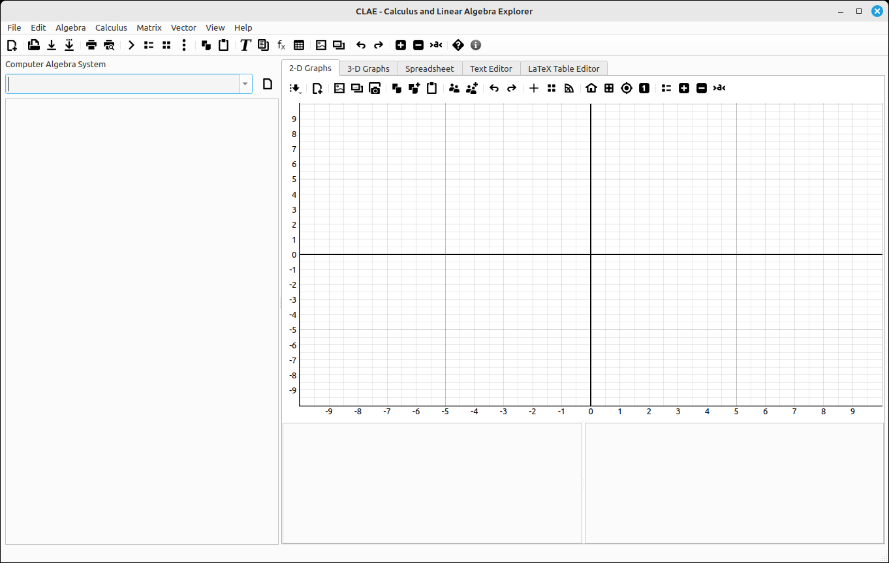
CLAE Interface#
The layout of the program is labeled below.
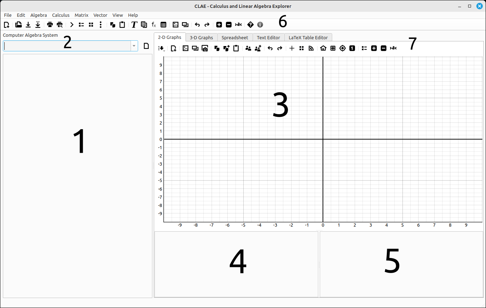
CLAE Interface Labeled and 2-D Graphics View#
1: The Computer Algebra System workspace.
2: The input bar for the Computer Algebra System workspace.
3: The 2-D graph area.
4: The 2-D graphics manager object list.
5: The 2-D graphics manager slider list.
6: Main menu and toolbar, options are almost entirely for calculations and manipulations of data in the Computer Algebra System.
7: Menu and toolbar for the 2-D graph area.
Note
The 2-D Graphs is in a tab along with 3-D Graphs, Spreadsheet, Text Editor, and LaTeX Table Editor. Each tab opens up that particular tool. Each of these has their own menu and toolbar separate from the main menu and toolbar and is dedicated to options for that tool.
The divider between the Computer Algebra System and the tabbed tool set is movable. These can be moved to any position in the application, even to the far right and far left. So, for example, if you wish to use only the Computer Algebra System and do not want to view the other tools you can move the divider to the far right of the screen.
The divider between the graph area and graphics manager (areas 3 and 4, 5) is also movable.
The divider between the graphics manager object list and the graphics manager slider list (areas 4 and 5) is also movable.
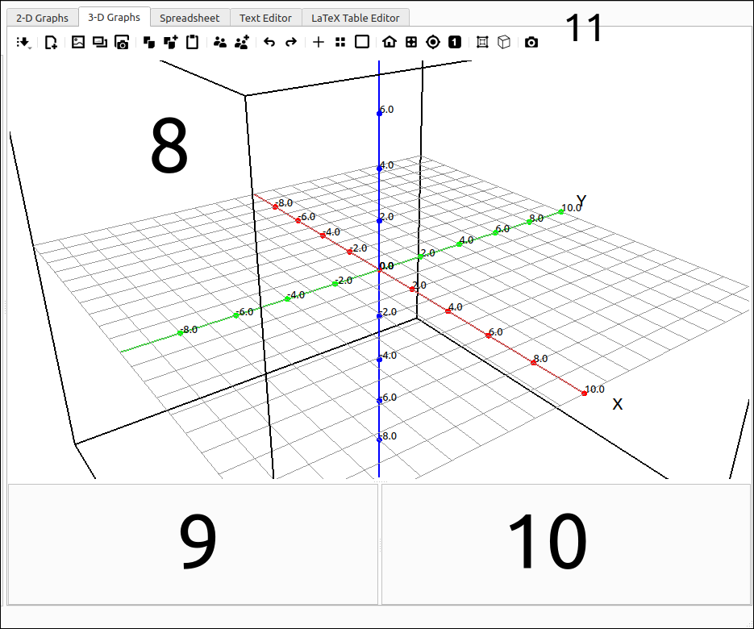
3-D Graphics View#
8: The 3-D graph area.
9: The 3-D graphics manager object list.
10: The 3-D graphics manager slider list.
11: Menu and toolbar for the 3-D graph area.
Note
The divider between the graph area and graphics manager (areas 8 and 9, 10) is also movable.
The divider between the graphics manager object list and the graphics manager slider list (areas 9 and 10) is also movable.
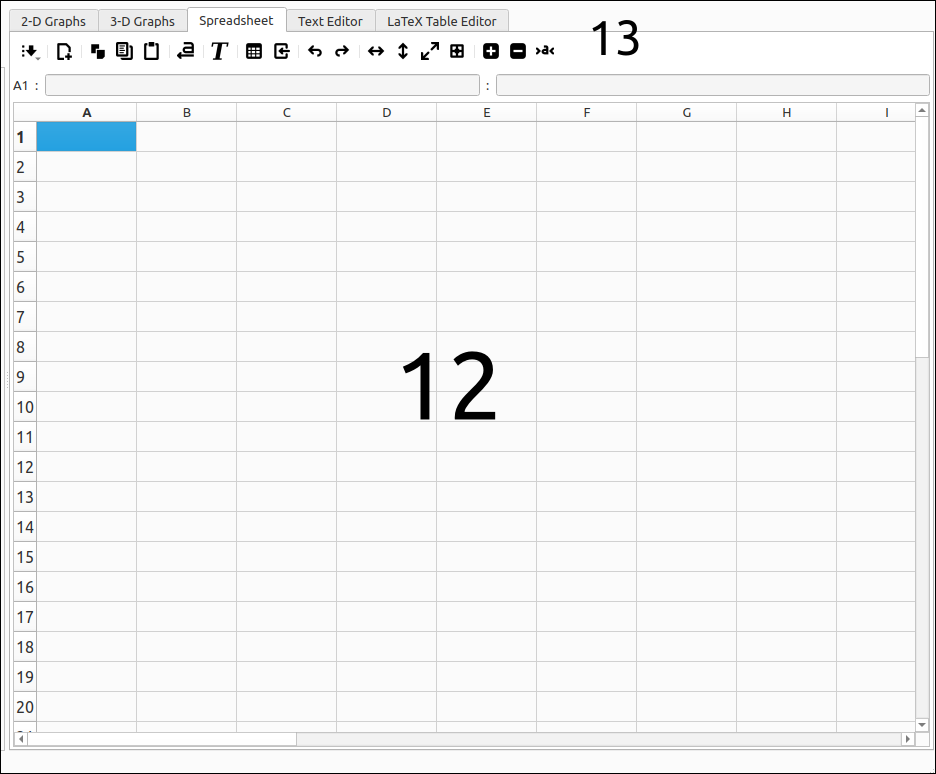
Spreadsheet View#
12: Spreadsheet grid area.
13: Menu, toolbar, and cell information area for the spreadsheet.
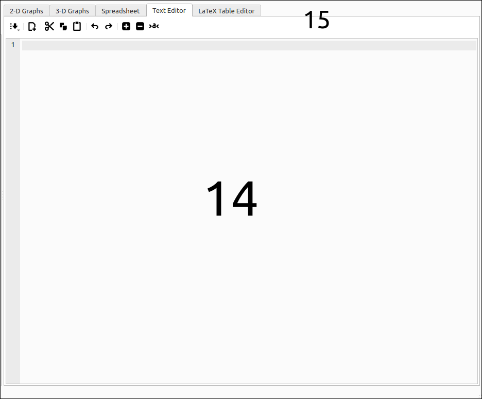
Text Editor View#
14: Text editing area.
15: Menu and toolbar for the text editor.
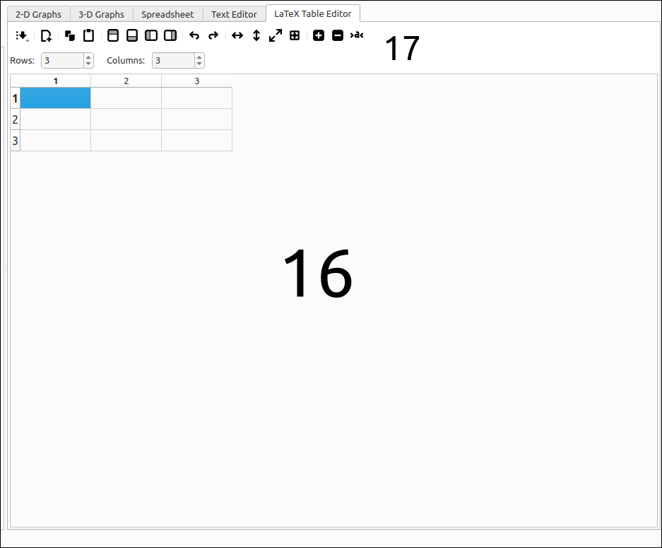
LaTex Table Editor View#
16: Table editing area.
17: Menu, toolbar, and table size selector for the table editor.
General Use#
The Calculus & Linear Algebra Explorer program offers many different ways to use the tools and options but it was primarily designed to do symbolic and numeric calculations in the CAS portion and visualize the concepts in the 2-D and 3-D graph areas. The spreadsheet, text editor, and LaTeX table editor are more specific tools that some users will find handy and others will never use. We will discuss all the tools in detail in their respective sections but to start we will concentrate on the CAS and the two graph areas. Here we will simply go through some of the basic features in a series of examples.
Example: Exploring some Trigonometry#
Start the program, keep the 2-D Graphs tab open, and adjust the section dividers to give a good portion of the screen to the plot area of the 2-D Graphs area.
In the CAS input bar in the upper left type in
sin(x), syntax in CLAE is case sensitive so keep this all lowercase. We will discuss the syntax in the CAS section of this documentation and there is a quick reference sheet in the CAS documentation as well. HitEnterafter you input the function, you will see the entry added to the CAS workspace.
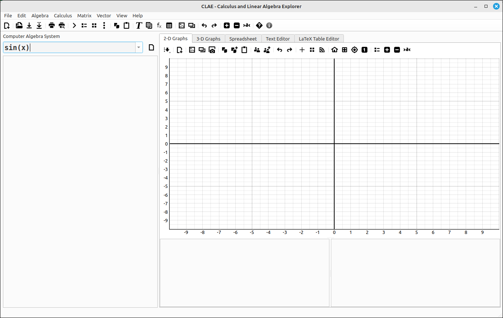
Trigonometry Example Stage 1#
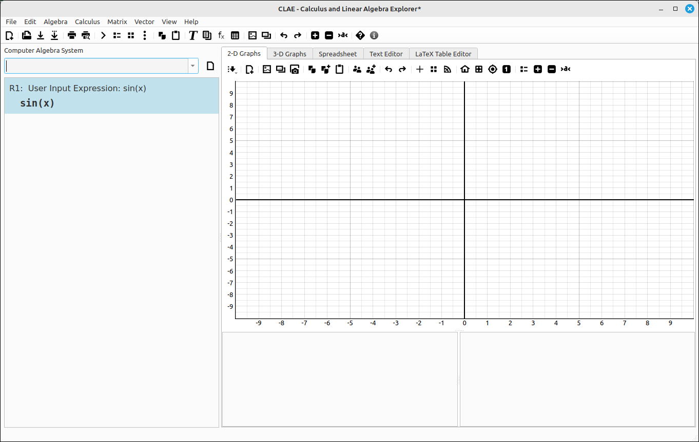
Trigonometry Example Stage 2#
Note
The expression
sin(x)is now in the CAS workspace and can be acted upon by the options in the main menu of the program. These will be discussed in detail in the CAS section.The expression is given a name
R1. You can use any of these names when inputting new expressions into the CAS, as well as the tabbed tools. The program will keep a running list of all the input expressions and the names will not be duplicated. So the next input will be namedR2, thenR3and so on.You may have noticed that there was a slight pause between hitting
Enterand the entry appearing in the CAS workspace. This is a bit more of an advanced discussion and will be looked at in the CAS section but it is because all calculations in the CAS are done in separate processes. This allows the continued use of the program while lengthy calculations (long simplifications or integrals) are being done.
Now input
cos(x)in the same manner as above.
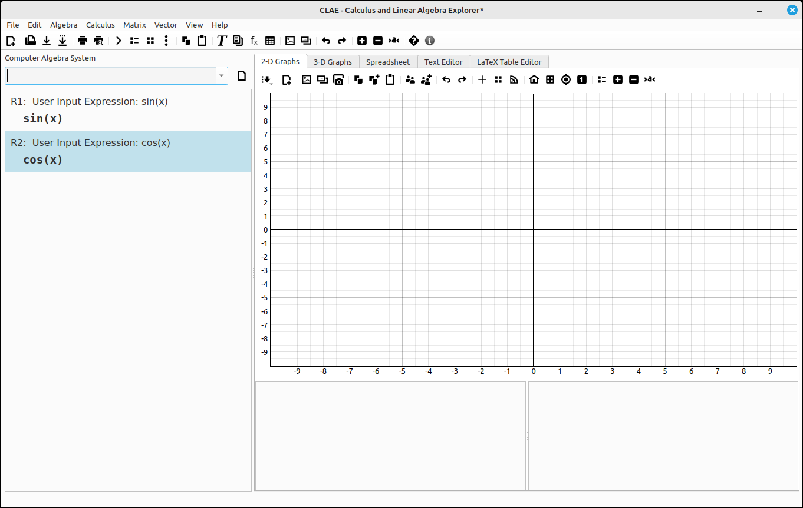
Trigonometry Example Stage 3#
Note
The currently selected expression is highlighted in light blue. So any menu option that is selected will be applied to to the selected expression.
Now lets input the expression
sin(x)^2, but we will not type the full expression into the input bar. Sincesin(x)is already in the workspace asR1all we need to do is type inR1^2into the input bar. As always, inputs are case sensitive, so make sure this isR1^2and notr1^2
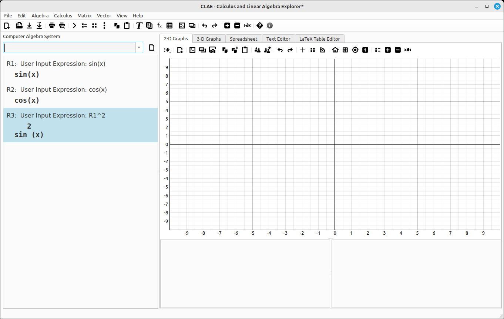
Trigonometry Example Stage 4#
Note
The syntax
sin(x)^2represents the expression \(\displaystyle \sin^2(x)\) and not \(\displaystyle \sin(x^2)\), to input the latter we would inputsin(x^2).For the Python users, you may be hesitant to use
^for exponentiation since you know that in Python we use**for exponents. That syntax can be used here as well, but we will stick to^since it is more natural in mathematics.All inputs into the CAS input bar are stored in the input bar history and can be selected at any time to load previous inputs into the input bar and reduce typing. Click on the down arrow on the right of the input box and a drop-down list of all your inputs (in reverse order) will be listed. If you select one of them the input bar will be replaced with the selection. You can also use the up and down arrow keys when the cursor is in the input box to cycle through the previous inputs.
If you have a syntax error there will be an error item in the workspace and the error expression will still be loaded into the input history. This will the user to quickly load the bad expression back into the input bar and edit the expression.
For an example of a syntax error, input the expression
sin(x, missing the ending parenthesis and hitEnter.
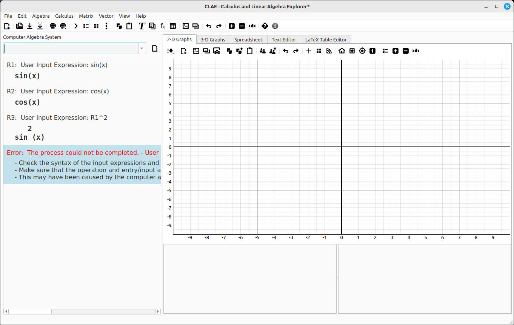
Trigonometry Example Stage 5#
Note
The new entry is an error entry. Error entry descriptions are in red and there is a list of probable fixes listed below the error.
The CAS workspace does not wrap at the size of the workspace but will scroll off to the right. This is done to make longer expressions easier to view. You can use the mouse and the scroll bar at the bottom to scroll right and left. You can also change where the wrapping occurs in the preferences, discussed in the CAS section.
You can delete the error message by simply selecting it and hitting the
Deletekey.The CAS has its own undoredo history, as do all of the tools. So of you want the error message back you can undo the delete you just did.
Now click the drop-down arrow in the input bar and select the bad expression
sin(x, finish the input out tosin(x^2), and hitEnter. You should see the following displayed.
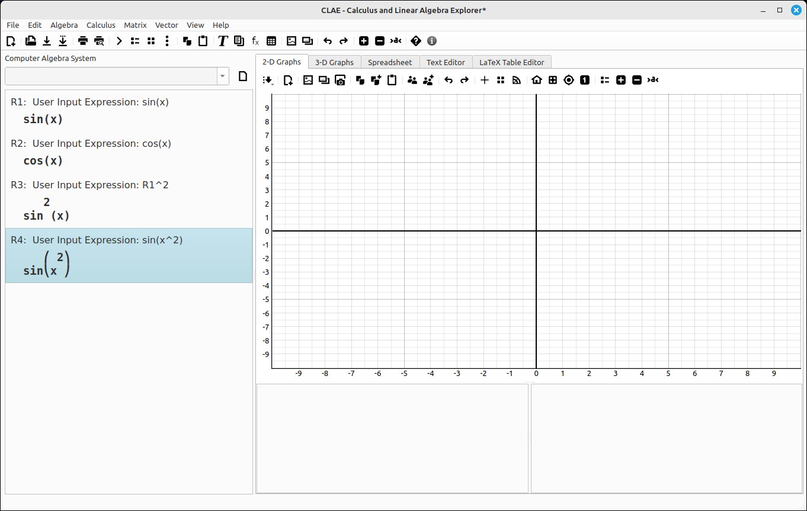
Trigonometry Example Stage 6#
Now let’s move on to the visualizations. To graph an expression all you need to do is click and drag an expression from the CAS to the graph area (or the graphics manager objects area, not the slider area). Click and drag the
sin(x)expression from the CAS to the graph area. You should see the following.
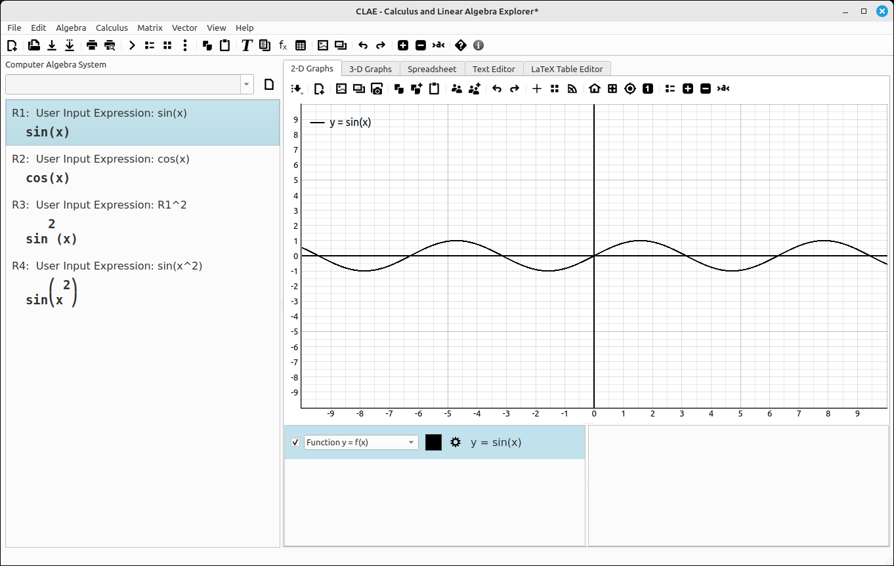
Trigonometry Example Stage 7#
Note
The function \(\displaystyle y = \sin(x)\) was automatically graphed in the graph area.
The expression
y = sin(x)was added to the graphics manager object lest in the lower left.The expression
y = sin(x)was added to the graph area legend.- The graph area can be easily manipulated to better see the graphs that are plotted.
Click and drag in the graph area will pan the coordinate system.
Click and drag in the axes area on the borders of the graph to pan in just one direction.
Right click and drag in the axes areas to expand or contract in one direction.
Right click and drag in the graph area to expand or contract in both directions.
The mouse wheel in the graph area will zoom in and out keeping the current aspect ratio.
If you want to view the graph in 1:1 aspect ratio select the
View > Set View Window to 1-1from the 2-D Graphs menu or its corresponding toolbar button. This will adjust the y axis to match the x axis and keep the current center where is is. The 1:1 is not locking, that is, you can adjust the scales of the separate axes alone after selecting 1:1 and the aspect ratio will change. After that you will need to select 1:1 to get back to a 1:1 ratio. The panning operations and the mouse wheel will not affect the aspect ratio.
The legend can be moved to any spot on the graph simply by a click and drag while the cursor is over the legend. The menu and toolbar have options for toggling the legend on and off as well as changing the font size.
- Now take a look at the entry in the graphics manager objects window. These are the same both in 2-D and 3-D.
The first tool is a checkbox, this determines if the graph is “active”. Clicking this check box will toggle the viewing of that object. Note you can also double-click on the entry description to toggle the viewing on and off.
The second tool is a drop-down selection that contains all the ways that the expression can be rendered graphically. If you click it you will see a list of items such as, Polar Function, Sequence/Series, etc. By selecting a different mode the graph of the object will change accordingly.
The third tool is simply a color selection button. Click it and select a new color for the object.
The fourth tool is the properties button. Click it to open the properties dialog box for that object. These will differ depending on the rendering mode of the object. That is, a Function will have different options than a Sequence/Series. These options will be discussed in detail in the 2-D Graphs section of this documentation.
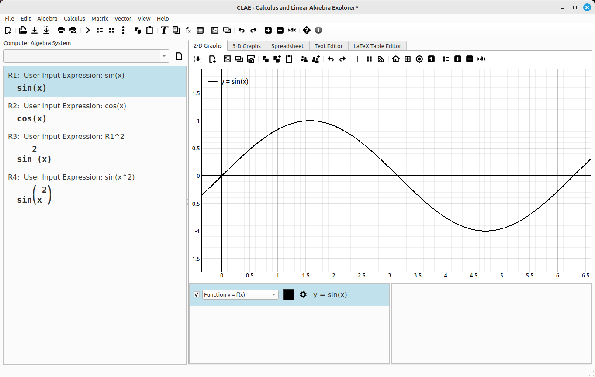
Trigonometry Example Stage 8#
Now let’s add in some sliders and animation. Input
a*sin(b*x + c) + d, then click and drag it over to the graph. You should see the following.
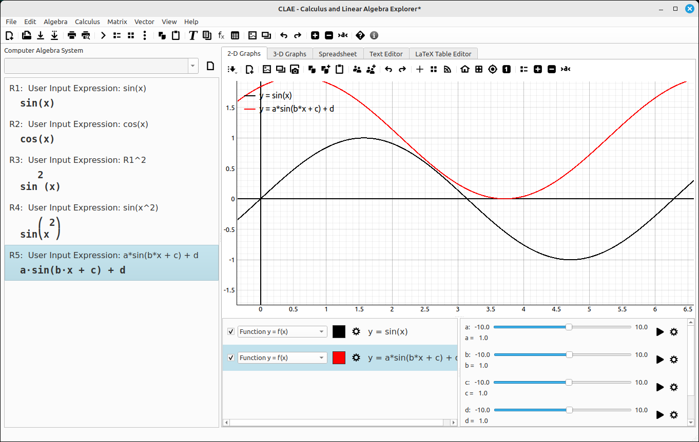
Trigonometry Example Stage 9#
The function was added to the object list and four sliders were automatically created in the slider window, one for each variable in the expression except for x. All animations in this program are done through sliders.
Each slider shows the variable it is linked to, there is an animation button that will animate that slider. You can have as many sliders animating at the same time. Clicking the play button will start the animation, the icon will change to a stop icon, clicking it will stop the animation. The final button for each animator will open the properties dialog box for that slider which allows the user to change the bounds, value, steps, animation speed, and the precision of the displayed slider value.
Click and drag the sliders to see the affect the change of these constants have on the graph of the expression.
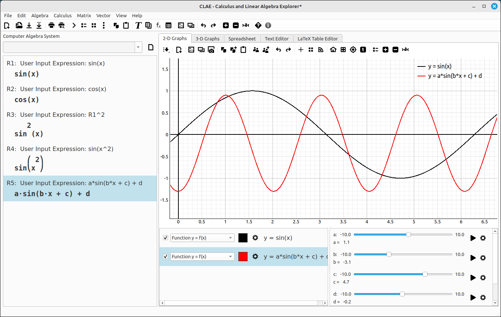
Trigonometry Example Stage 10#
Note
A couple final notes about what we have done in this example.
The Computer Algebra System portion of this program does not care what your variable names are. So you could input
sin(w)orsin(alpha)orsin(George)instead ofsin(x). The CAS will allow you to solve, differentiate, or integrate, etc. with respect to any variable, including George. The graphics system on the other hand are a little more restrictive. We could have written this application to be as general with variable names in the graphics systems as it is in the CAS but this would require the user to select independent and dependent variables. To avoid this extra, somewhat confusing, step we designate x and t as your two options for the horizontal axis and y as the designation of the vertical axis. Any other variable is considered to be a constant.Note in the inputs we explicitly use
*for multiplication. This is a requirement of the syntax. The program does not understand juxtaposition, so2xwould be seen as an error andxyis seen as the single variable named xy.If you want to save your work select
File > Save Workspacefrom the main menu, or the corresponding toolbar button. Input a filename and select Save. This will save the file with a .clf extension. You can then open this file withFile > Open Workspace....Note that there are options for saving and loading the CAS. These will only save and load the CAS data. The saving and opening of the workspace will save and load all current program data, including both graphics objects, the spreadsheet data and data from both editors.
Example: A Quick 3-D Example#
Start the program, click the 3-D Graphs tab to show the 3-D plot area. Adjust the section dividers to give a good portion of the screen to the plot area of the 3-D Graphs area.
In the CAS input bar in the upper left type in
sin(x) - cos(y), and hitEnter.Click and drag this expression over to the graph area. You should see something like the image below.
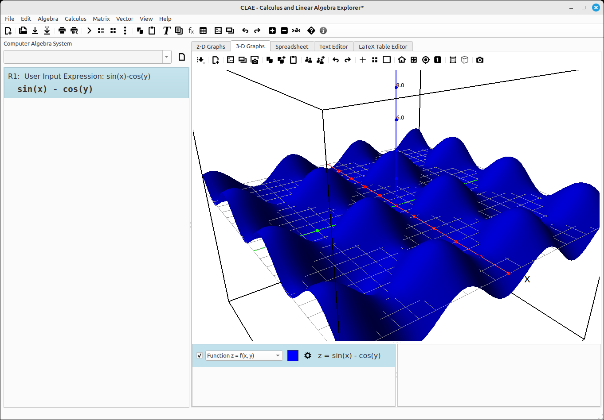
3-D Example Stage 1#
Note
As with the 2-D graphics system, the object is added to the graphics manager and the plot.
The graphics manager entry for 3-D is the same as in 2-D. Starts with an “active” checkbox, then a drop-down list of possible visualizations, a color selector, the properties button, and finally a description.
We will look at the options for each 3-D object in detail in the 3-D Graphs section of this documentation.
In the CAS section, you can use the input drop-down to bring in previous inputs for editing, you can also double-click the entry in the CAS workspace. This will open up the appropriate editor for editing the expression. In these examples we have only used the input bar but there are other dialog boxes for inputting matrices and piecewise defined expressions.
Double-click the expression to load it into the input box and edit it to,
d*sin(a*x) - cos(b*y), and hitEnter.Click and drag this over to the graph.
Double-click the
sin(x) - cos(y)entry description (or click the check box) to hide that surface. You should see the following.
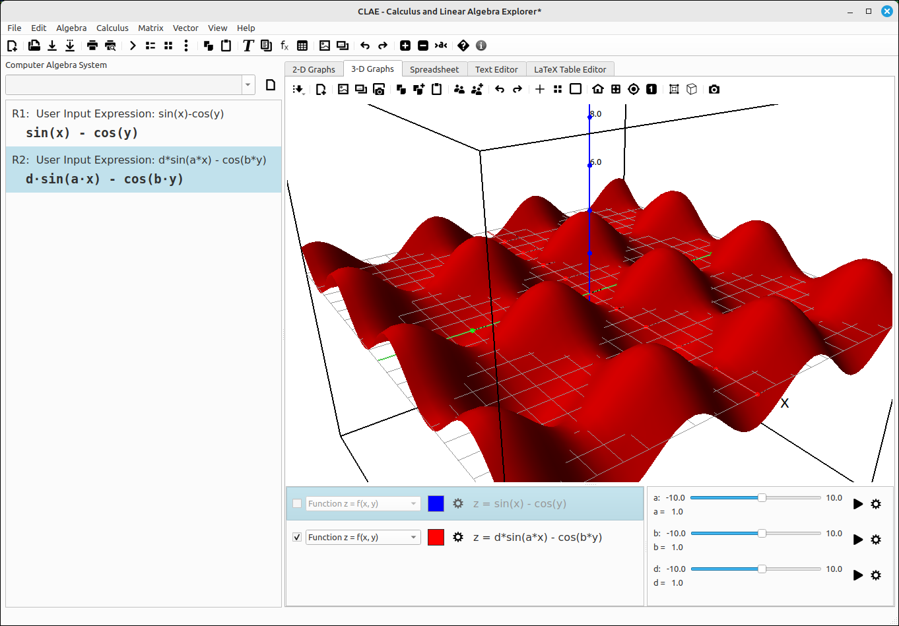
3-D Example Stage 2#
Move the sliders around to see the effects on the surface.
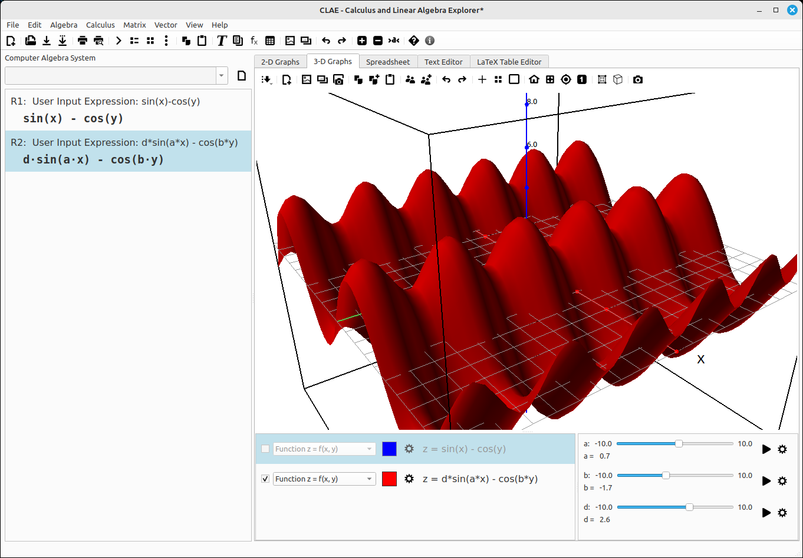
3-D Example Stage 3#
Note
The 3-D Graphs section does not have a legend in the graph view. The object list in the graphics manager serves as a legend in this tool. There are several options for exporting the graphics manager object list to text and images that can be used as a legend when exporting information to word processors.
- The graph area can be easily manipulated to better see the graphs that are plotted.
We will discuss these in more detail in the 3-D Graphs section. In general, how the mouse is used to manipulate the graphing region is dependent on the mouse mode selection in the 3-D graphs menu.
- If the mouse mode is set to the default, Camera Rotation and Zoom.
Click and drag in the graph area will rotate the coordinate system about the center of the region.
The mouse wheel will zoom in and out.
The arrow keys will also rotate the coordinate system about the center of the region.
Using Ctrl+Up and Ctrl+Up will also zoom in and out.
If the mouse mode is set to one of the scaling options, a click and drag will do the selected scaling of the axis or axes.
If the mouse mode is set to one of the translation options, a click and drag will do the selected axis or axes translation.
If you want to view the graph in 1:1 aspect ratio select the
View > Set View Window to 1-1from the 3-D Graphs menu or its corresponding toolbar button. This will adjust the axis to a 1:1 aspect ratio (which is the default). The 1:1 is not locking, that is, you can adjust the scales of the separate axes after selecting 1:1 and the aspect ratio will change. After that you will need to select 1:1 to get back to a 1:1 ratio. The rotation and zooming operations will not affect the aspect ratio.
As with the 2D graphics system, the 3D graphics system is a little restrictive on the names of the variables whereas the Computer Algebra System portion of this program is not. In the 3D graphics system, x, y, and z are used as the axes and the variables for any rectangular coordinate expression. The variable t is used for space curves, u and v are used for parametrically defined surfaces, r, t, ans p are used for polar, cylindrical, and spherical coordinates. Any other variable is considered to be a constant.
Example: A Quick Linear Algebra Example#
Start the program, click the 3-D Graphs tab to show the 3-D plot area. Adjust the section dividers to give a good portion of the screen to the plot area of the 3-D Graphs area.
We will now input a matrix. Although you can do this through the input bar, it is much easier to use the matrix input dialog box. Select
Edit > Input New Matrix/Vector...from the main menu or its corresponding toolbar button. The following dialog will appear.
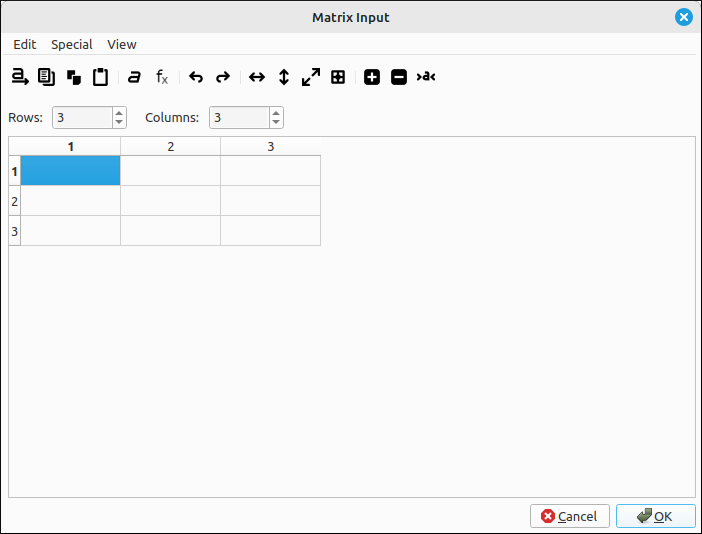
Linear Algebra Example Stage 1#
In the size selectors, change the number of columns to 4.
Now click in the grid in the (1, 1) position. You can input numbers or expressions into each entry of the matrix, the syntax will be discussed in detail in the CAS section of the documentation. Here we will input just a numeric matrix. When inputting simply type the expression and hit either
EnterorTab, the enter key will move you down a row and the tab key will move across a row. The program will automatically move to the next row or column on the enter or tab keys.Input the following matrix and click OK.
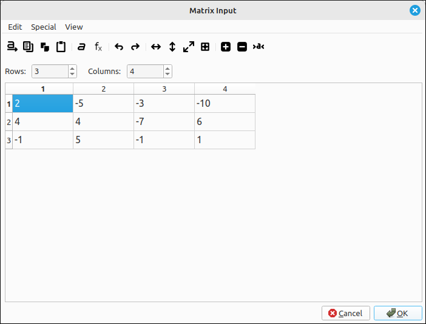
Linear Algebra Example Stage 2#
The application should look like the following.
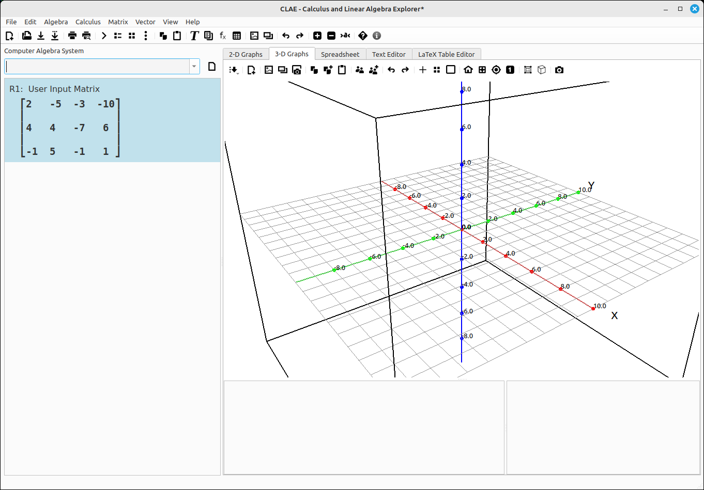
Linear Algebra Example Stage 3#
Click and drag this expression over to the 3-D graph area.
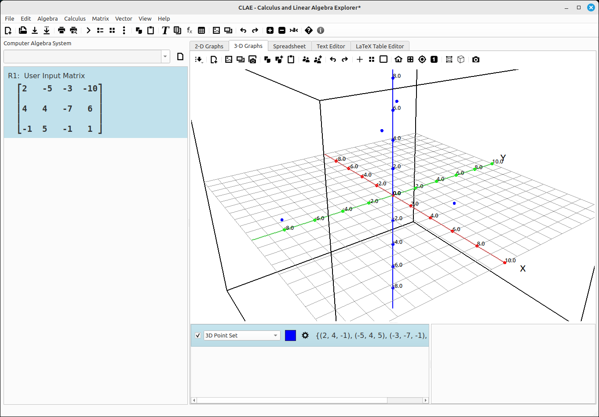
Linear Algebra Example Stage 4#
Note that the matrix was interpreted as a set of points (each column taken as a point in 3-D), which is a very common interpretation in Linear Algebra. We would like to interpret this a little differently, specifically as a system of linear equations, \(2x -5y-3z = -10\), \(4x+4y-7z = 6\), and \(-x +5y-z = 1\).
In the type drop-down box for the object change
3D Point Setto3D Linear System
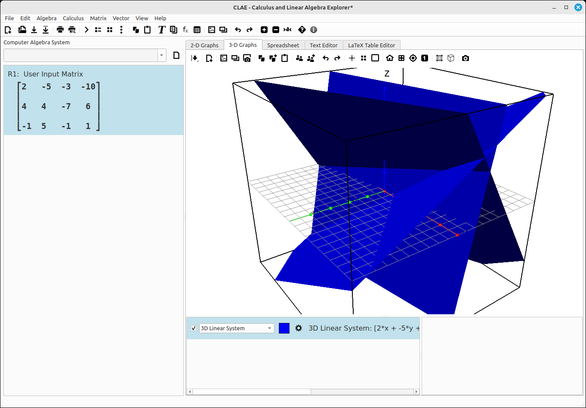
Linear Algebra Example Stage 5#
Now you are viewing the three planes of the linear system and it is clear from the image that there is a single point solution to the system. Rotate ad zoom the view to get a good look at the graph.
Note
There are other surface shading modes that may be better in this and other situations, we will discuss them in the 3-D Graphs section.
With the matrix in the CAS selected, select
Matrix > Reduced Echelon Formfrom the main menu.
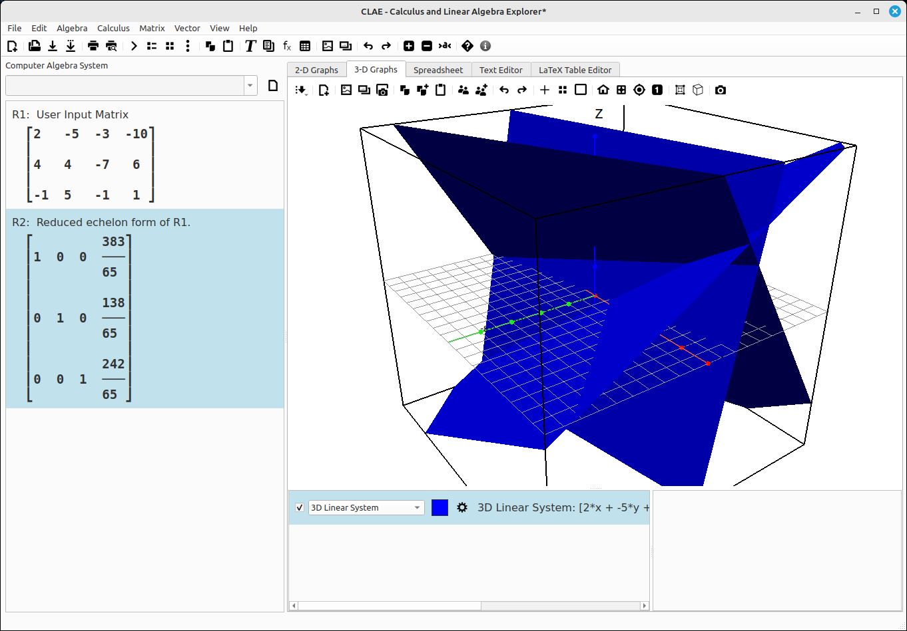
Linear Algebra Example Stage 6#
The result of reducing the matrix using row operations shows the matrix,
The solution, that ism the point of intersection of the three planes is the point designated by the last column,
We will extract this column and then plot it on the graph as a point to view the point of intersection along with the planes of the system.
From the main menu select
Edit > Extract from Matrix > Column..., a small dialog box will appear, set the column number to 4 and click OK. NowR3contains the point of intersection.
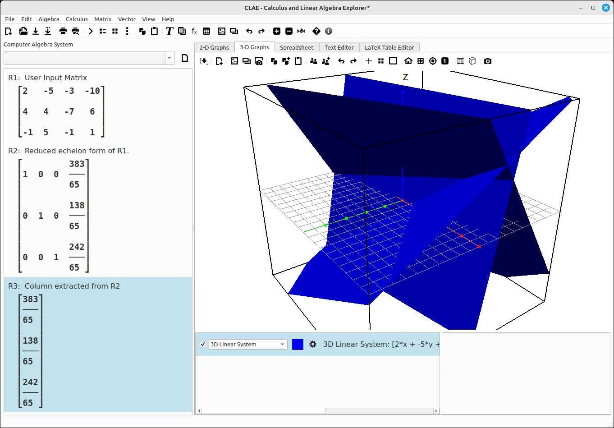
Linear Algebra Example Stage 7#
Click and drag this point over to the graph.
Linear Algebra Example Stage 8#
The point comes in as a 3D Point Set, which is what we want. You can see on the graph a red dot (although a little small) in the position of the point of intersection.